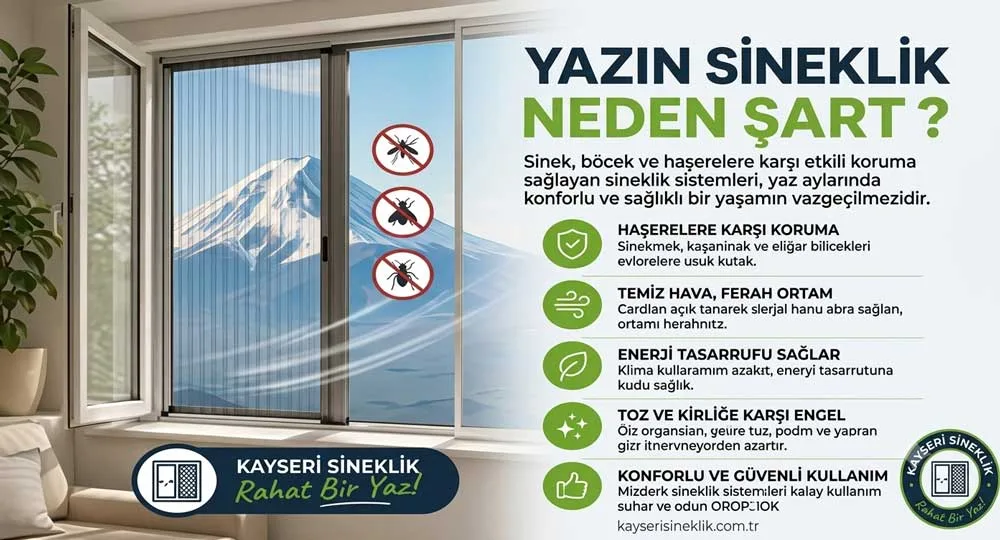
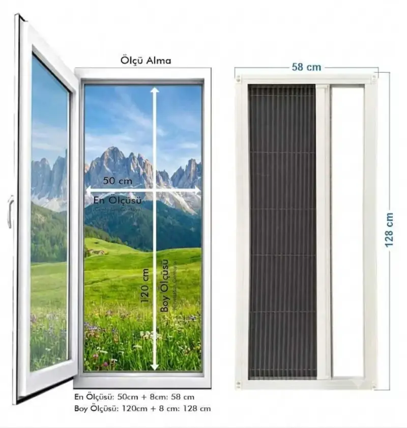
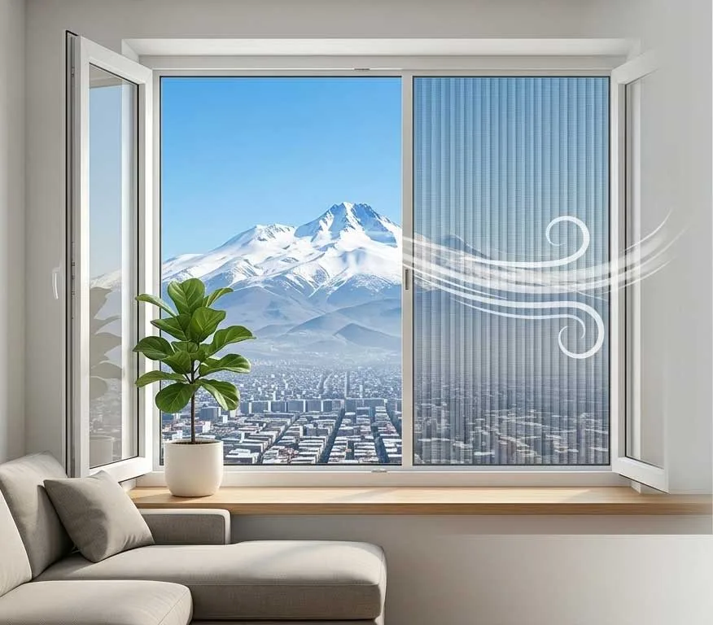
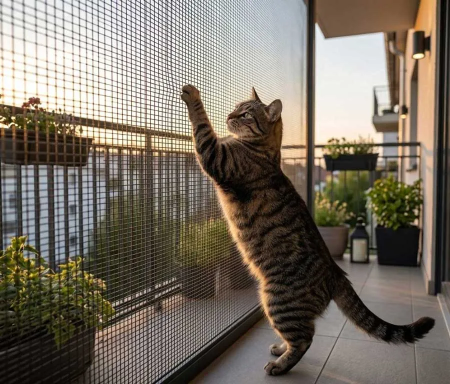
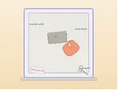
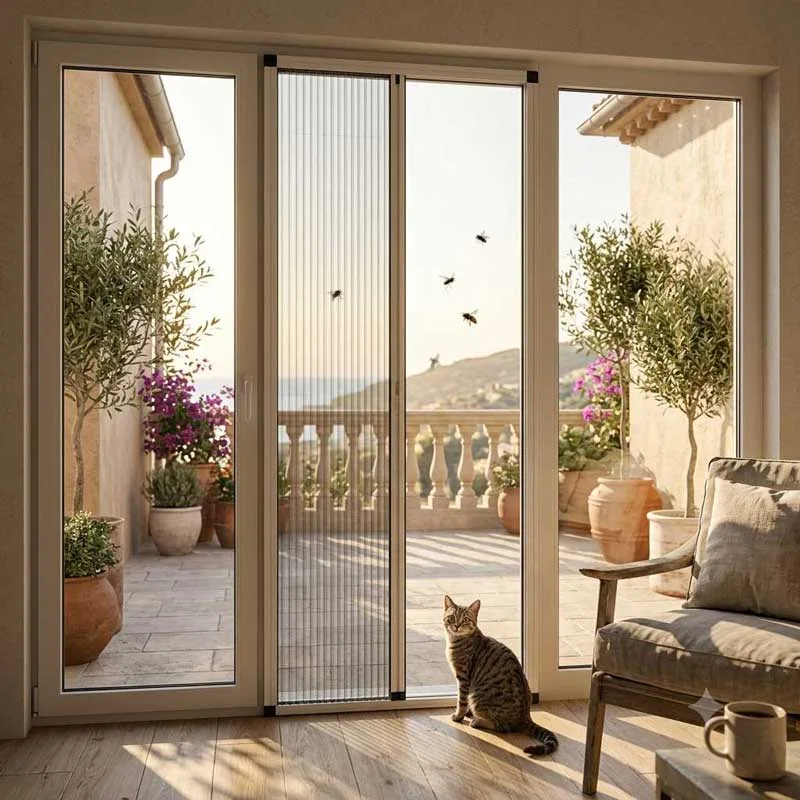
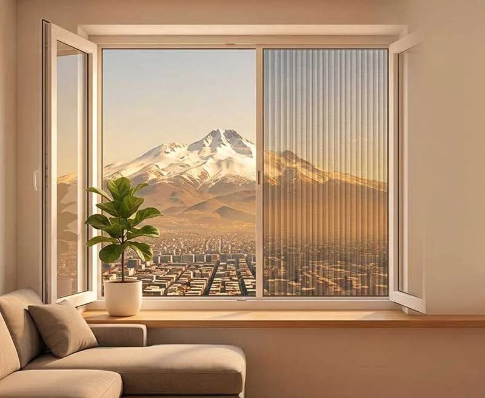

Kayseri Hizmet Bölgelerimiz
Merkez ilçelerde günlük keşif ve montaj; Kayseri genelinde ölçüye özel sineklik üretimi ve kargo.

Merkez İlçeler
Günlük keşif ve montaj hizmeti

Melikgazi Sineklik
Melikgazi'de ölçüye özel üretim ve montaj.
Yakın bölgeler: Kocasinan, Talas
Sayfayı gör →
Kocasinan Sineklik
Kocasinan'da ölçüye özel üretim ve montaj.
Yakın bölgeler: Melikgazi, Talas
Sayfayı gör →
Talas Sineklik
Talas'ta ölçüye özel üretim ve montaj.
Yakın bölgeler: Melikgazi, Kocasinan
Sayfayı gör →
Hacılar Sineklik
Hacılar'da ölçüye özel üretim ve montaj.
Yakın bölgeler: Talas, Kocasinan
Sayfayı gör →İncesu Sineklik
İncesu'da ölçüye özel üretim ve montaj.
Yakın bölgeler: Hacılar, Kocasinan
Sayfayı gör →Çevre İlçeler
Bireysel siparişlerde kargo; toplu işlerde yerinde montaj
Develi Sineklik
Develi'de ölçüye özel üretim ve montaj.
Yakın bölgeler: İncesu, Yeşilhisar
Sayfayı gör →Yahyalı Sineklik
Yahyalı'da ölçüye özel üretim ve montaj.
Yakın bölgeler: Develi, Yeşilhisar
Sayfayı gör →Bünyan Sineklik
Bünyan'da ölçüye özel üretim ve montaj.
Yakın bölgeler: Talas, Sarıoğlan
Sayfayı gör →
Tomarza Sineklik
Tomarza'da ölçüye özel üretim ve montaj.
Yakın bölgeler: Develi, Bünyan
Sayfayı gör →Pınarbaşı Sineklik
Pınarbaşı'nda ölçüye özel üretim ve montaj.
Yakın bölgeler: Bünyan, Sarız
Sayfayı gör →
Sarıoğlan Sineklik
Sarıoğlan'da ölçüye özel üretim ve montaj.
Yakın bölgeler: Bünyan, Akkışla
Sayfayı gör →Sarız Sineklik
Sarız'da ölçüye özel üretim ve montaj.
Yakın bölgeler: Tomarza, Pınarbaşı
Sayfayı gör →Akkışla Sineklik
Akkışla'da ölçüye özel üretim ve montaj.
Yakın bölgeler: Sarıoğlan, Felahiye
Sayfayı gör →Felahiye Sineklik
Felahiye'de ölçüye özel üretim ve montaj.
Yakın bölgeler: Sarıoğlan, Akkışla
Sayfayı gör →Özvatan Sineklik
Özvatan'da ölçüye özel üretim ve montaj.
Yakın bölgeler: Felahiye, Sarıoğlan
Sayfayı gör →Yeşilhisar Sineklik
Yeşilhisar'da ölçüye özel üretim ve montaj.
Yakın bölgeler: İncesu, Develi
Sayfayı gör →